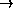

Dwingeloo Plate Measuring Machine
A NEWSTAR Guide to Determining Positions Using the Dwingeloo Plate Measuring Machine.
Original by James Albinson, July 1983
Version 3, updated by Richard Strom, October 1992
For Problems, questions, complaints, suggestions on use and operation: See Richard Strom, alternatively Ger der Bruyn.
In case of mechanical/electrical failures: See Jean Casse.

This document is based on previous versions by Seth Shostak and Bob Hanisch, and gives a simple procedure for measuring the positions of objects from the PSS prints or KPNO plates. The general procedure is as follows:
(1) identify standard stars from an overlay of the region of interest,
(2) measure the positions of a number of standard stars and the desired objects,
(3) solve for the plate constants and the positions of the desired objects. A guide to these procedures is given below.

Turn on the terminal next to the measuring machine and the yellow Interloop interface to which it should be connected. (If the interface is off, there will be no response from the terminal. If the terminal is disconnected from the interface, you will have to ask for help to connect it up.) If you get the server prompt (`Server >'), connect to the RZMVX4 computer (`c' should be enough) and log in under `measure', password: meas$$92
You now need to type the following command: assign user1: qd2:
You're now ready to run the OVERLAY program.

Type: exe overlay
The program will ask for a right ascension and declination; these refer to the field center you're interested in. For example, if you want to find star positions around a galaxy, type the position of the galaxy.
An example:
RA_MAPCENTRE(RA of map_centrein h,m,s): 4,2,35.000
DEC_MAPCENTRE(DEC of map_centrein d,m,s): 69,40,42.00
For negative declinations simply prefix the declination degrees with a minus sign.
OVERLAY will produce some output on the lineprinter and an overlay plot on the QMS printer/plotter. It may be desirable to make the plot on a transparent sheet; in that case special Xerox transparent overhead sheets can be loaded in the QMS printer (check with other users first, and only load as many sheets as you need). Take the plot and identify your standard stars. If the plot was made on paper, you can circle the stellar positions on a plastic sheet using a marking pen that can be obtained from the secretaries. It is also helpful to label the stars with the same numbers that appear on the OVERLAY plot, as you will have to enter these numbers when measuring the positions. On the other hand, you may not want to write too much stuff on the plastic sheet as this may obliterate objects that you want to measure. Since it is not possible to measure any more than 30 standard stars, be sure that you select standard stars with numbers between 1 and 30. (OVERLAY numbers the stars in order of increasing distance from the field center.)
Special note for very northerly fields (dec ): For very northerly fields it is more convenient to make the overlays with a Schmidt projection rather than a linear projection (which is the default). To do this type in the command @schmidt. This will produce plots with the Schmidt projection for all subsequent runs of OVERLAY. To go back to a linear projection, simply type the command @linear.
Special note for measuring several fields: You should complete your measurements for each field before proceeding to the next field. The reason for this is that the program which solves for the plate constants and object positions uses the standard star positions from the most recent run of OVERLAY.

Preliminaries. Turn on the plate illumination light. The switch is on top of the green box behind the measuring machine. Turn on the Television camera and monitor screen. The switch for this is the leftmost of the three rotary switches on the front of the monitor. Make sure that the lowest of the 7 channel knobs on the right-hand edge of the monitor is selected. After a few seconds the monitor should show an image. The brightness and contrast knobs are the other two rotary knobs on the front of the monitor. Adjust to suit. The focus knob is below and to the right of the eyepiece, facing the front of the machine. Adjust as necessary.
Place the ``sandwich" of PSS print and plastic overlay between the glass plates of the measuring machine. The orientation is not important. Adjust the measuring machine so that the axes are set at the center of their travel (x-axis at 10.0, y-axis at 9.0). Then release the gray clamps, center the microscope over your field, and retighten the clamps.
Turn on the interface (white rocker switch on right) and make sure the mode switch is set to `TERMINAL'. Turn on the two Sony Magnescale digital readouts and the illuminating lamp, if you haven't already (switch is on the little green box). Adjust the lamp for good illumination, and use the knurled knob to focus the image through the microscope (if no TV). Push the `START/READ' switch on the interface.
Start up the measuring machine program by typing: exe measure
The program asks you if you want a new file. To start measuring a new field, answer this question with `y'. To continue measuring on a field still in position on the measuring machine, answer with `n'.
Set the mode switch on the interface chassis to `TRANSMIT'. Measure your standard stars (in any order) as follows:
Repeat steps 1-3 for each standard star you want to measure (10 to 15 stars are usually sufficient). Since there is no backlash in the digital readout, it is not necessary to repeat your measurements or to approach each star from the same direction.
If you have a large number of radio sources to identify and would like to have approximate x-y positions around which to look for optical identifications, skip from here to section.
Measure the ``unknown'' objects (stars, galaxies, or whatever) in the same manner, but set the thumbswitches to numbers between 31 and 98, incrementing the count by one for each object you measure. You may, of course, measure the objects in any order you find convenient. The x-y positions will continue to be displayed on the terminal, but the object number will be the thumbswitch setting minus 30.
When you have finished all the positions you want, set the thumbswitches to 99 and push the `START/READ' switch. This terminates the program. Be sure to set the mode switch back to `TERMINAL'.

Start up the program by typing: exe solve
The program asks you for some information about the plate:
- PLATE_TYPE: Type a carriage return if you used a PSS print, or the appropriate code for a KPNO plate.
- FIELDNAME: Type a name (up to 8 characters) of this field.
- TRANSFORM_CODE: Type `1' (x-y  alpha,delta)
- PLATE_CENTER(hms,dms): Type the right ascension and declination of the field center in the format shown. These coordinates can be found in the little box in the upper left corner of each PSS print; put a comma between hms dms.
The program now goes on to solve for the plate constants. You have the opportunity to delete certain stars from the solution of plate constants if you have reason to believe that their measured positions are in error. Assuming that they are all okay, however, just type `return' in response to this question.
- CORRECT_STAND?Type either 'Y' or `return'.
The program now solves for the coordinates of the unknown objects. When the program finishes, you have the option to send the results to be printed on the lineprinter:
- OUTPUT? The default is Y (yes), so type a `return'. Finally, you may have the positions you've measured added to the standard star positions as secondary standards:
- SECONDARY_STAND?Typically the response is `no' (the default is yes). You may now pick up your output downstairs from the lineprinter.
If your plate solution looks dubious, i.e., one or more stars have large errors, you can rerun SOLVE and delete these stars from the solution. Run SOLVE again, and answer the questions concerning the type of plate and field name again. Hereafter you want to use the same data as before. SOLVE remembers all of the information from the previous run, and uses this information if you simply answer all of the questions with `return'. So, answer the questions with `return's until you are asked:
- EXCLUDE_STAND: Type in the numbers in the specified format, and then continue as before to produce a new plate solution.

If you have a large number of radio sources you want to try to identify, you could spend an eternity measuring candidate objects unless you know where on the plate to look. It is possible to use SOLVE to get x-y positions for given radio source positions (in right ascension and declination epoch 1950), and these x-y positions can then be used as guides in measuring candidate objects.
To make use of this option, you must measure some standard star positions in the field of interest as previously described. Rather than measuring any unknown objects at this time, however, terminate MEASURE (set thumbswitches to 99 and push the `START/READ' switch) and run SOLVE (see section). You will need to run SOLVE twice, first to check that your standard stars have been measured accurately (check the rms fit and the individual errors; if one or two stars are bad delete them from the fit the next time around), and second to convert given alphas and deltas (i.e. your radio source positions) to x-y coordinates.
Now run SOLVE a second time. When the program asks you for the type of transformation (TRANSFORM_CODE), type a `2', i.e., transform (alpha,delta) (x,y). The program will then ask you to enter the coordinates of your source positions. You should type all of the alphas and deltas in the given format, (put a blank between alpha delta as opposed to a comma), and terminate your input with a blank line (i.e. an extra `return'). The rest of the program is then run in the same way as described previously in section .
The output from SOLVE will now contain a list of x-y coordinates for your source positions. You can use these to set the measuring machine to the appropriate position, and then measure candidate objects in the vicinity. To do this, run MEASURE as described in steps III.a-d. However, when you are asked:
- NEWFILE? type a `no' (i.e., use the Old file). The program then asks you how many objects were measured in the previous run of the program (it should be able to keep count itself, but this is a very stupid program):
- OLD_OBJECTS?Type in the number of objects previously measured. This is not the highest numbered standard star, but rather simply the total number of objects measured. At this point you can measure the positions of candidate objects just as in step III.f. It is not necessary to measure any standard star positions again (i.e., skip step ...), as your unknown object x-y positions are simply being appended to your previous measurements.
When you have finished, please do not forget to logout; just type `lo' on the terminal. Turn off all the bits of the measuring machine and put the green cover over the camera and table. Put any PSS prints carefully back in their folders, and replace them at the right place in the cabinet.
.
.
.
.
.
.
.
.
.
.
.
.
.
.
.
.
.
.
.
.